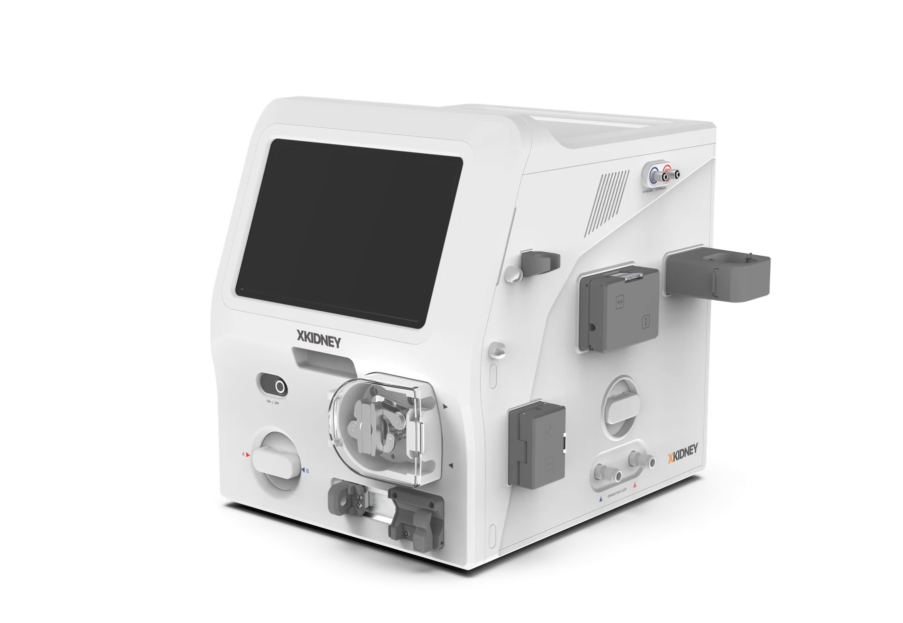
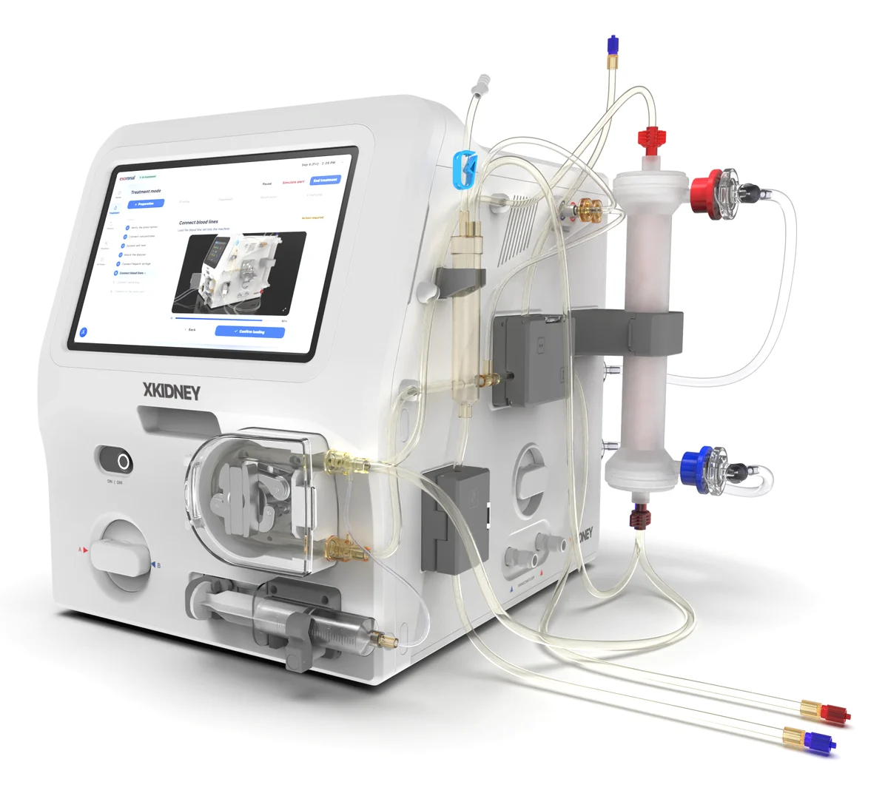
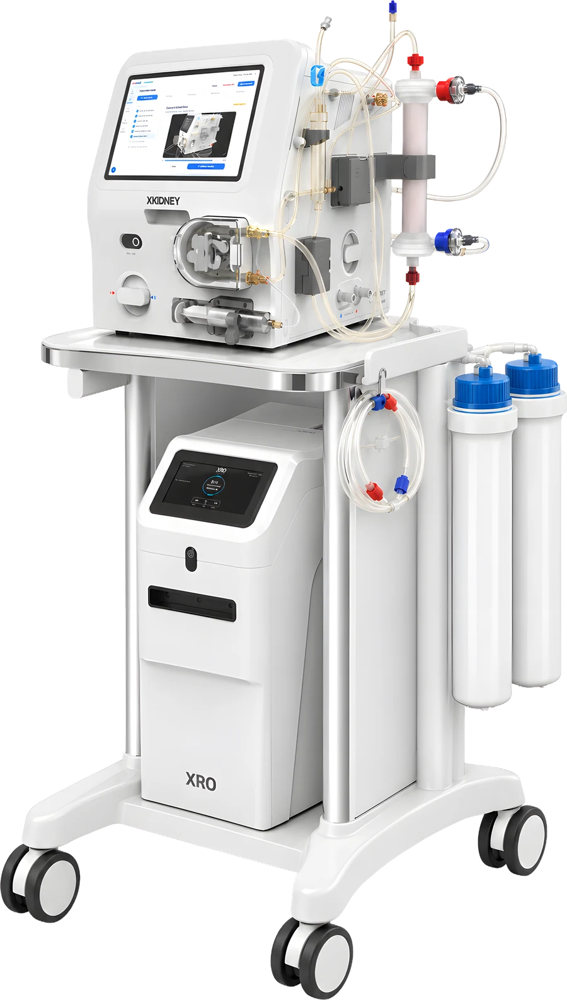

XKIDNEY
Hospital-grade fluid balancing on one cart.

UF accuracy
Fluid balance set by the pumps
Weight
340 × 410 × 432 mm
In one device
Hemodialysis, hemofiltration, push-pull HDF
Small enough to live at home. Precise enough to trust in the clinic.
4–5× smaller and lighter.
Bar length shows weight. Comparison figures come from public specifications.
In-center accuracy, and better.
Tighter fluid balance means fewer hypotension episodes and fewer alarms.
XKIDNEY figure is bench-validated under standardized test conditions.
On target, run after run.
Target versus actual ultrafiltration volume. Dashed lines mark ±100 mL.
- XKIDNEY
- Conventional in-center machine
Pump-controlled. More precise.

Familiar lines. Simple setup.
Uses the dialyzers and blood lines clinics already stock. The screen walks through each step, so it is easy to learn and simple to use.
Project goals and bench results.
- Dimensions
- W × H × D
- 340 × 410 × 432 mm
- Weight
- Device
- 29 kg
- Power supply
- 50/60 Hz
- 120 / 220–230 VAC
- Treatments
- Hemodialysis, hemofiltration, push-pull HDF
- 3
- Fluid balancing
- Active Pump Balancing
- APB
- UF accuracy
- UF rate 0–1250 mL/h
- ±30 mL/h
- Blood flow
- Setting range
- 0–400 mL/min
- Dialysate flow
- Setting range
- 0, 300–600 mL/min
- Dialysate temperature
- Setting range
- 33–39 ℃
- Dialysate conductivity
- Accuracy ±0.1 mS/cm
- 12.5–16.5 mS/cm
- Heparin pump
- Bolus 0.1–5.0 mL, 30 mL syringe
- 0–2.5 mL/h
- Air bubble detector
- Blood circuit
- Ultrasonic
- Pressure display
- Arterial −400–0 / venous −100–300 mmHg
- 2 channels
- Disinfection
- Chemical 5–37 ℃ · heat up to 85 ℃
- Heat · chemical
- Regulatory
- FDA Class II medical device
- 510(k) in prep.
Specifications are design targets and bench results and may change. XKIDNEY is not yet FDA-cleared and is not available for sale.
From the tap to dialysate.
The portable reverse-osmosis unit that pairs with XKIDNEY. It turns tap water into dialysate-grade water without a water room, and also connects to existing clinic machines.
- Output
- Product water, 1.6 L/min
- 96 L/h
- Salt rejection
- Total dissolved salts
- >97%
- Size · weight
- 557 × 250 × 430 mm
- 32 kg


One cart. The whole treatment.
Put XKIDNEY and XRO on one cart, and treatment needs only a tap and a power outlet.